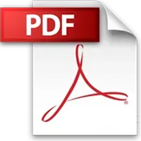
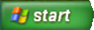
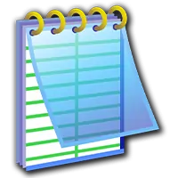

Novus77
Personal Edition
跳过启动动画 →
A little nostalgia. A personal desktop.
Novus77
Developer / Creator
请点击 Novus77 头像，登录我的个人桌面
Novus77
Developer / Creator
➜
About Me

My Resume
My Projects
Contact Me
音乐播放器

‹
Novus77
我的项目
作品与实验
联系方式
给我写封邮件
关于我
我的简历

我的文档
Windows Media Player
我的文档
我的音乐
我的项目
我的电脑
CRT 屏幕效果
显示桌面
切换 CRT 屏幕效果
关于 Novus77 XP
现在可以安心休息了。
重新启动 Novus77 XP
这个 XP 桌面需要 JavaScript。你也可以直接联系我：
1432680433@qq.com
。